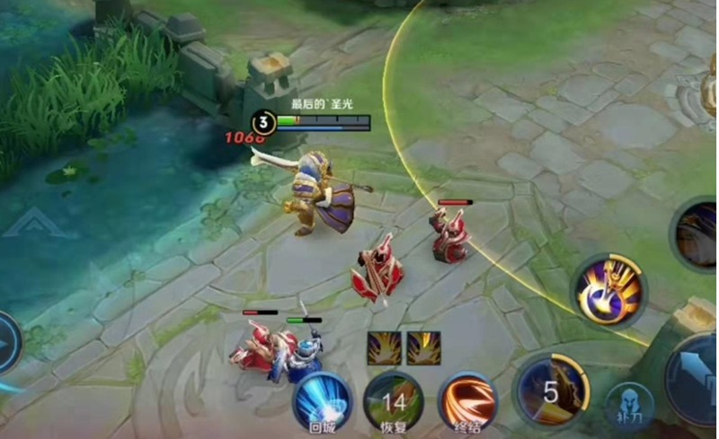

返回课程列表
第一课
绪论
体育运动与力学的天然联系
⏱️ 约30分钟
体育运动是力学原理最直观的展示。每一次跳跃、每一次投掷、每一次冲刺，都是力与运动完美配合的结果。理解力学，就能理解运动的本质。
体育中的力学无处不在
从古希腊的铁饼投掷到现代的百米飞人大战，体育运动的发展史就是人类不断理解和应用力学原理的历史。科学训练的核心就是优化力学效率。

经典运动中的力学原理
各项运动中的力学体现：
- 短跑：起跑蹬地的反作用力、空气阻力与速度的平方关系
- 跳远：起跳角度约20°（非理论45°，因为水平速度更重要）
- 游泳：流体阻力与推进力的平衡，减阻泳衣的科学原理
- 足球：香蕉球的马格努斯效应，旋转产生侧向力
理论力学的运动视角
理论力学的三大分支——静力学、运动学、动力学——在体育运动中都有完美的对应。静力学对应平衡姿势，运动学对应运动轨迹，动力学对应力的作用。
力学三分支的运动对应
理论力学在体育中的三个维度：
- 静力学→体操平衡：单手倒立时重心必须在支撑手正上方
- 运动学→田径轨迹：铅球出手后的抛物线轨迹分析
- 动力学→力量训练：举重时杠铃的加速度与施加力的关系
- 综合应用：跳水运动员的起跳力、空中旋转和入水姿态